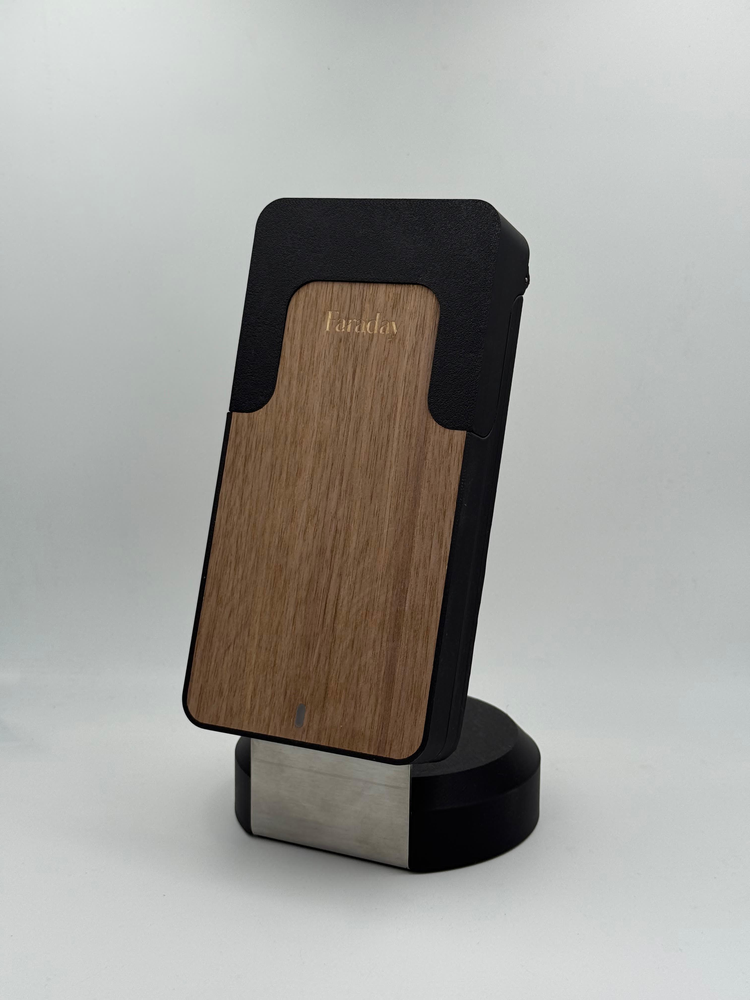
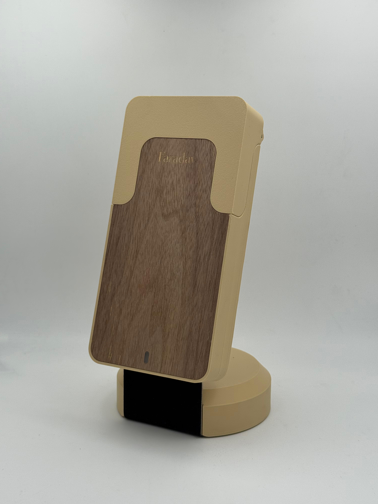

3 propositions de charte graphique pour une marque de déconnexion désirable.
Base stratégique retenue : grand public, familles, jeunes urbains connectés,
avec un équilibre volontaire entre bien-être, tech et objet premium.
J’ai construit une seule piste d’évolution proche du signal actuel, puis
deux pistes volontairement plus affranchies pour donner à Faraday une vraie
marge de croissance au-delà de la box et de sa silhouette produit.


Ce qui doit rester vrai
Le logo doit être fort en app icon et très lisible à petite taille.
La marque doit fonctionner en gravure, embossage et marquage monochrome.
Faraday ne doit pas sonner gadget ou anti-tech : la promesse est mieux vivre avec la tech.
Lecture produit
Le produit dit déjà quelque chose de précieux : rituel, présence, objet de foyer.
Les finitions bois, crème, noir et métal donnent une matière premium naturelle. La marque peut
donc monter en gamme sans perdre l’accessibilité grand public.
Recommandation
Je recommande la piste 02 — Protected Time. C’est la plus robuste si tu veux une
marque qui ne soit pas prisonnière de l’objet, tout en restant crédible sur la box, l’app,
les groupes, l’univers famille et une future plateforme de bien-être connecté.
01 · Signal Calm
Évolution premium du signal existant.
La seule piste vraiment proche de l’intuition actuelle. Elle part d’une ligne vivante qui se calme
progressivement : du bruit vers le silence, de l’agitation vers la présence.
C’est la proposition la plus simple à déployer rapidement sans casser l’ADN déjà amorcé.
Logo principal & déclinaisons
faraday
Disconnect to reconnect
faraday
Disconnect to reconnect
Icône seule
Gravure mono
faraday
Wordmark
faraday
Disconnect to reconnect
Empilé
App icon, favicon, gravure
App icon
32 px
64 px
Accent digital
Très bon comportement en gravure laser, sérigraphie et animation d’onboarding.
ManropeInterface. Douce, lisible, plus chaleureuse qu’un sans générique.
IBM Plex MonoDonnées, sessions, temps, métriques.
Pourquoi ça marche : le logo raconte immédiatement Faraday, sans texte d’explication.
Risque : la piste reste assez “quiet tech”; elle projette moins une ambition lifestyle plus large.
RassuranteCalmeObjet-compatibleDéploiement rapide
Animations proposées
Line DrawPour splash screen, onboarding, reveal du mot-symbole.
Quiet PulseTrès bien pour une session active, sans tomber dans le gadget.
Soft DriftAnimation de hero ou d’écran d’attente, plus respirante que démonstrative.
02 · Protected Time
La marque comme sanctuaire de temps protégé.
Ici, Faraday n’est plus définie par l’objet. C’est une architecture mentale :
on crée un espace protégé au milieu du bruit. Le signe prend la forme d’un portail
monolithique, suffisamment abstrait pour vivre en app icon, suffisamment concret pour évoquer
le “mettre à l’abri”.
Logo principal & déclinaisons
Faraday
Disconnect to reconnect
Faraday
Disconnect to reconnect
Icône seule
Gravure mono
Faraday
Wordmark
Faraday
Disconnect to reconnect
Empilé
App icon, favicon, gravure
App icon
32 px
Accent
Dark mode
Le signe reste propre en creux, en plein, ou en marquage métallique. Très bon candidat pour un badge produit discret.
Palette & système typo
MidnightSocle tech premium, sérieux, non anxiogène.
#101826
VaporRespiration, clarté, douceur santé.
#EEF3F1
Signal MintAccent app, statut, onboarding, énergie.
#2FD0C1
Voltage OrangeCTA forts, rappel d’action, usage ponctuel.
#FF7443
AlloyNeutralité interface, analytics, systèmes.
#74808A
Space GroteskDisplay expressif, technologique sans froideur corporate.
InterInterface rapide, solide, internationale, très mobile-friendly.
IBM Plex MonoMesure, temps protégé, streaks, logs, scoreboards.
Pourquoi ça marche : le signe est simple, propriétaire, très app-first et n’enferme pas Faraday dans la seule forme de la box.
Risque : la piste est un peu plus “système de marque” que “objet émotionnel”; elle demandera une direction photo chaleureuse pour garder l’âme.
ScalableApp-firstFamille + communautéTech x wellbeing
Animations proposées
Sanctuary GlowTrès bon comportement pour landing, app icon splash ou modal focus.
Portal RiseParfait pour le moment où l’on “entre” en session ou dans un flow dédié.
Focus PulseVersion plus énergique pour stats, streaks, CTA ou notifications.
03 · Presence Loop
La marque comme rituel, cercle et retour à soi.
La piste la plus éditoriale et la plus lifestyle. Le signe n’a plus besoin de citer l’objet.
La version principale devient une
boucle ouverte : un cycle qui respire, qui reste disponible, qui invite au retour à soi.
Elle donne à Faraday une présence plus culturelle, plus premium et plus “longevity” que purement tech.
Logo principal & déclinaisons
Faraday
Disconnect to reconnect
Faraday
Disconnect to reconnect
Faraday
Variante avec barre
Icône signature
Avec barre
Gravure mono
Faraday
Wordmark
Faraday
Disconnect to reconnect
Empilé
App icon, favicon, gravure
App icon
32 px
Accent avec barre
Sans barre
Très élégante en embossage ou marquage cuivre. Je garderais 1 ou 2 usages avec barre comme accents, mais la famille principale vit mieux sans.
Slow OrbitTrès belle animation pour la présence, la durée et la ritualisation.
Breath LoopVersion plus contemplative, parfaite pour les écrans d’attente ou de focus.
Warm HaloAccent émotionnel pour landing page, fin de session ou communication de marque.
Lecture comparative
01 Signal Calm : la plus fluide à lancer immédiatement. Très Faraday, très lisible, très compatible avec l’existant.
02 Protected Time : la plus stratégique. Forte en app, forte en système, forte pour faire grandir la marque.
03 Presence Loop : la plus désirable si tu veux construire une marque de rituel et de design, plus premium et plus lifestyle.
Mon conseil
Si tu veux arbitrer vite : prends la structure de marque de la piste 02, puis
conserve de la piste 01 le soin apporté à la douceur et à la respiration. C’est le meilleur
point d’équilibre entre autonomie de marque, app icon mémorable,
gravure produit et ambition future de plateforme.